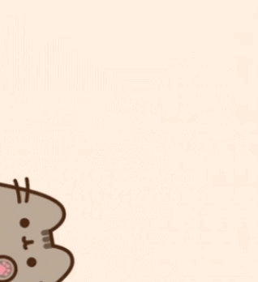

um pouquinho sobre mim 🤎
amor, fiz isso aqui porque acho que poucas vezes falei sobre mim contigo. tem umas coisas que eu queria te contar, então vem ler.
coloca o som baixinho e vem ler
minha vida nada emocionante
amor, acho que poucas vezes falei sobre mim, não porque queira esconder algo, mas por achar meio chato as coisas sobre mim. tipo, até vir pra cá pra SLZ eu só comia terra e estudava. tô brincando KKKKKK. mas eu meio que só era trabalho, casa, igreja. não tinha eventos interessantes na minha vida, eu sempre fui assim, na minha.
mas eu também saía, viu KKKK
mas sempre gostei de sair. eu me enfiava no submundo do Reviver com Moisés, com Fihama e companhia KAKAKAKAK. já até fui pro pagode. bom, eu não danço, mas até que a música não é tãoooo ruim assim.
tem uma coisa que talvez tu não saiba
eu acho que nunca te falei que tu é a primeira namorada que eu tenho. tipo, eu namorei um mês e um pouquinho com uma menina, mas eu nem conto KKKKKK. e homens nenhum. não achei nenhum interessante o suficiente pra querer algo ou apresentar pra família. e eu quero te apresentar, se tu quiser e se sentir confortável.
quero que a gente possa conversar
e talvez a gente não seja pra sempre. não sei, eu quero, mas se em algum momento não for mais algo que tu queira, ou que não esteja sendo bom pra nós, a gente senta e conversa e vê o que dá. eu sempre tô disponível pra tu falar sobre tudo, bom ou ruim, conversar sobre nós e nosso relacionamento. ou se eu estiver te sufocando, fazendo algo que tu não queira ou que tu queira que eu mude, pode falar comigo.
eu sou meio desligada às vezes KKKK
pq a gente não briga, e isso pode parecer chato, digo o fato de nunca brigar. e às vezes eu sou meio despercebida das coisas. por exemplo, tenho quase certeza que tu me falou que não gosta muito de Bis, e eu te dei um. e eu erro a letra de qualquer música, mesmo tendo ouvido ela milhares de vezes. sou péssima pra lembrar a letra, mesmo amando ouvir música. mesmo que eu cante lendo a letra, na próxima vez eu vou errar a letra da música KKKKKK.
nosso programa de casalzinho
e eu sinto que a gente não tem saído muito assim. tipo, eu gosto de ficar de casalzinho em casa, mas sei que tu gosta de sair e beber cerveja. eu não me importo de sair contigo pra um lugar e beber, posso beber gin de 10 sem problemas KKKKKK. aquele Bar do Porto, por exemplo, eu acho a vista bonitinha. e isso nunca vai ser problema pra mim.
teu cheiro é outra história
só sou chatinha porque não gosto de beber cerveja. mas teu cheiro com cheiro de cerveja me embriaga, mas de um jeito bom. eu gosto honestamente. 🤎
cafés superfaturados de SLZ
algo que eu gosto muito de fazer é ir em cafés superfaturados daqui de SLZ. e eu quero te levar em todos, ruins e bons, pra gente falar mal e falar bem KKKKKK. quero ter esses momentos contigo, até os mais bobos.
quero viver essas coisinhas contigo
quero ir naqueles eventos de canoagem de manhã cedo e no fim da tarde, fazer trilha se tu gostar, pegar sol na praia ou ficar na pracinha. tanto faz. desde que seja contigo. 🤎

é isso, meu amor 🤎
não sei muito bem como terminar isso aqui, então vou terminar do jeito mais sincero que consigo: eu quero viver essas coisas contigo. as coisas grandes, as pequenas, os rolês aleatórios, os cafés caros e até os dias em que a gente só fica em casa sem fazer nada. porque, no fim, tanto faz, desde que seja contigo.